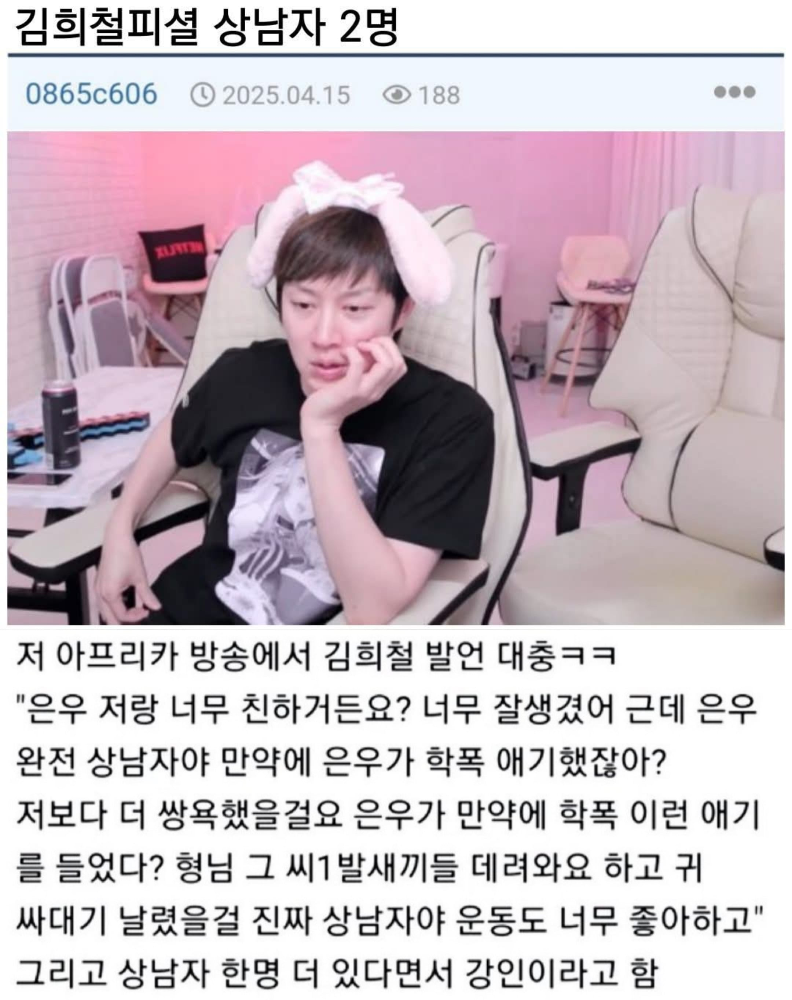

김희철피셜 상남자 2명
댓글
상남자가 아니라 쌍놈
쟤 기준 상남자는 다 범죄자임?
헤이헤이헤이
그래서 지코랑친햇...
강패 ㅋㅋㅋㅋㅋㅋ
돌려깐거같은데
대놓고 개새끼에요 못하니까 그러는듯?
그래도 강인 존잘이었는데....
확실히 김희철은 남자랑 안친한듯
강인 요새 뭐함
둘은 문제아지만 최강

상남자가 아니라 쌍놈
쟤 기준 상남자는 다 범죄자임?
헤이헤이헤이
그래서 지코랑친햇...
강패 ㅋㅋㅋㅋㅋㅋ
돌려깐거같은데
대놓고 개새끼에요 못하니까 그러는듯?
그래도 강인 존잘이었는데....
확실히 김희철은 남자랑 안친한듯
강인 요새 뭐함
둘은 문제아지만 최강
탈세좋아하는 걔?